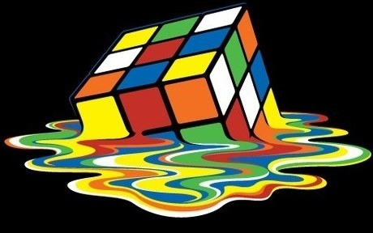
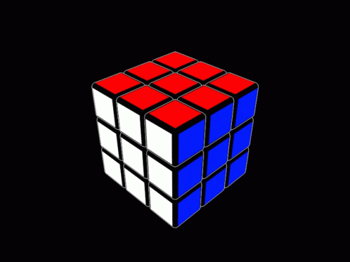

Le Rubik’s Cube est inventé le 19 mai 1974 par
L’idée initiale d’Ernő Rubik était de construire un cube afin d’amener ses étudiants à deviner quel était son mécanisme interne, comment les petits cubes pouvaient tourner suivant trois axes tout en restant solidaires, et ainsi de les intéresser à la géométrie en trois dimensions.
Ce n’est qu’ensuite qu’il eut l’idée (grâce à la suggestion d’un ami) de colorer chaque face d’une couleur différente, constatant alors qu’après mélange, l’ordre initial du cube s’avérait extrêmement difficile à retrouver (une chance sur 43 252 003 274 489 860 000 à chaque rotation). Il eut alors l’idée de le commercialiser en tant que « casse-tête » géométrique et mathématique. Il faudra un mois à l'inventeur du Rubik's Cube pour résoudre son propre casse-tête.
Le Rubik’s Cube atteint son maximum de popularité au début des années 1980. Plus de 100 millions de cubes sont vendus entre 1980 et 1982. De nombreux jeux similaires sont distribués peu de temps après le Rubik’s Cube, notamment le « Rubik's Revenge », une version 4×4×4 du Rubik’s Cube. Il existe aussi une version 2×2×2 et 5×5×5 (connus respectivement sous les noms de « Pocket Cube » et de « Professor's Cube »), et des versions dans d’autres formes, comme la pyramide ou le dodécaèdre régulier. Depuis juin 2008, la marque V-Cube vend les modèles en 6×6×6, 7×7×7 et 8×8×8.
En 1981, Patrick Bossert, écolier britannique de douze ans, publie sa solution détaillée du petit objet aux 43 252 003 274 489 856 000 de positions possibles,soit plus de 43 trillions. You can do the cube s'est vendu à 1,5 million d’exemplaires à travers le monde, dans dix-sept éditions différentes. Il est numéro un des best-sellers du Times et du New York Times en 1981.
Même s’il existe des tas de méthodes et d’algorithmes différents pour débuter,j’ai choisi de vous présenter ici les plus simples. Je le répète car c’est important.
La méthode pour débutants consiste en la succession des 7 étapes suivantes, décomposées en deux parties :
Les deux premiers étages (ou deux premières couronnes, c’est pareil):
Dans le jargon du cube de Rubik, cela s’appelle la méthode de résolution d’étage par étage (aussi appelée en anglais layer by layer). Le dernier étage (LL pour Last Layer) est à lui seul résolu en 4 étapes.Avec cette méthode, le dernier étage du casse tête est le plus long, car plus on avance,plus on a construit et plus les algorithmes doivent faire attention à ne pas casser ce qui a déjà été fait.Mais ne vous inquiétez pas, je vous ai concocté des formules courtes et faciles à retenir.Notez que les speedcubeurs ont des méthodes de résolution qui permettent de n’avoir que deux ou trois étapes seulement pour le dernier étage. Parfois même une seule ! Mais ceci est pour le jour où vous serez un champion !
PS:Voici une vidéo qui vous aidera
